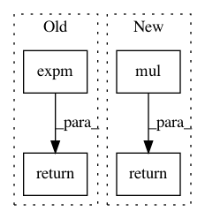

5dcf6a8194db9c9a22348053a4a7cffab4f923c9,geomstats/geometry/general_linear.py,GeneralLinear,exp,#Any#Any#Any#,34
Before Change
if base_point is None:
return expm(algebra_mat)
else:
return cls.mul(base_point, expm(algebra_mat))
@classmethod
def log(cls, point, base_point=None):
After Change
if base_point is None:
return expm(tangent_vec)
else:
lie_algebra_vec = cls.mul(cls.inv(base_point), tangent_vec)
return cls.mul(base_point, cls.exp(lie_algebra_vec))
@classmethod
def log(cls, point, base_point=None):
r
In pattern: SUPERPATTERN
Frequency: 3
Non-data size: 4
Instances
Project Name: geomstats/geomstats
Commit Name: 5dcf6a8194db9c9a22348053a4a7cffab4f923c9
Time: 2020-04-01
Author: 62605255+pchauchat@users.noreply.github.com
File Name: geomstats/geometry/general_linear.py
Class Name: GeneralLinear
Method Name: exp
Project Name: geomstats/geomstats
Commit Name: 5abf7a65ef338f38f916f17eb2cb8d25d88568fc
Time: 2020-01-15
Author: opeltre@gmail.com
File Name: geomstats/geometry/grassmannian.py
Class Name: GrassmannianCanonicalMetric
Method Name: exp
Project Name: geomstats/geomstats
Commit Name: f461574bd10c48a233d23a49bd35492a5b5cca95
Time: 2020-04-01
Author: 62605255+pchauchat@users.noreply.github.com
File Name: geomstats/geometry/general_linear.py
Class Name: GeneralLinear
Method Name: exp